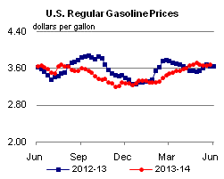
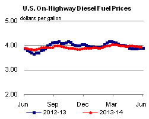
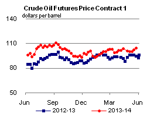
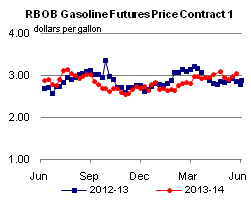
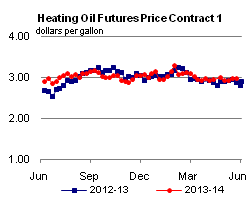
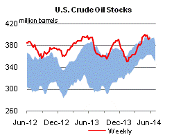
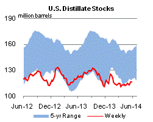
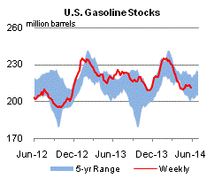
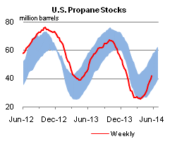

Released: May 29, 2014
Next Release: June 4, 2014
U.S. Crude Oil Exports Continue to Rise
The United States exported 246,000 barrels per day (bbl/d) of crude oil in March 2014 (the latest data available from the U.S. Census Bureau), the highest level of exports in 15 years (Figure 1). Exports have increased sharply since the start of 2013 and have exceeded 200,000 bbl/d in four of the last five months. The increase in crude exports is largely the result of rising U.S. crude production, which was 8.0 million bbl/d in February.
{kind=link}
To export crude oil from the United States, a company must obtain a license from the Bureau of Industry and Security (BIS) of the U.S. Department of Commerce. Pursuant to Section 754.2 of the BIS export Administration Regulations which codifies the export licensing requirements, the following kinds of transactions will generally be approved: exports from Alaska's Cook Inlet; exports to Canada for consumption or use therein; exports in connection with the refining or exchange of strategic petroleum reserve oil; exports that are consistent with international energy supply agreements; exports of foreign-origin crude; exports of California Heavy crude up to an average of 25,000 bbl/d; and temporary exports or exchanges. Licenses for other exports of U.S.-origin crude are considered on a case-by-case basis. For such other exports, the regulations describe the characteristics of transactions that will generally be approved as in the national interest.
Almost all of the crude oil exported from the United States has been delivered to Canada, and most of the recent increase in crude oil exports has been from the U.S. Gulf Coast (PADD 3) (Figure 2). Gulf Coast crude exports averaged 134,000 bbl/d in the first quarter of 2014, a 283% increase over 2013's record high of 35,000 bbl/d. In the first quarter 2014, nearly 75% of Gulf Coast exports have left the region from the Houston-Galveston district, in Texas. The remaining barrels were loaded in Port Arthur, Texas and New Orleans, Louisiana. Exports from the East Coast (PADD 1) averaged 30,000 bbl/d in the first quarter of 2014, down slightly from 2013 levels, but up from 9,000 bbl/d in 2012. First quarter exports from PADD 1 were evenly distributed between the Port of New York and Portland, Maine, which is the starting point of a pipeline that delivers crude to refineries in the Montreal area. Exports of crude from the Midwest (PADD 2) have long been a source of crude for refineries in Sarnia, Ontario.
{kind=link}
In the last several years, exports to countries other than Canada have been rare. Such shipments have been limited to re-exports of foreign-origin crude oil, initially intended for processing by U.S. refineries. Foreign-origin crude has been re-exported to China, Costa Rica, France, South Korea, and Mexico.
More recently, trade press has reported that a cargo of Canadian crude oil loaded in the Gulf Coast for delivery to a refinery in Spain. With limited infrastructure available to transport growing Canadian crude production to the country's coasts where it could be delivered into the global market, producers are looking for other ways to reach such markets. The estimated 500,000-600,000 bbl of Canadian crude was said to have been loaded with 500,000 bbl of Mexican Maya in early May. The Canadian barrels were transported via rail to the Gulf Coast to clearly satisfy the requirement that foreign barrels are not commingled with crude of U.S. origin. Although this is the first reported shipment of its kind, it could be a harbinger of other rail-to-tanker movements. Pipeline-to-tanker movements could also occur in the future if provisions can be made to satisfy the requirement that foreign oil that is destined for export markets has not been commingled with oil of U.S. origin.
Retail gasoline prices mixed, diesel fuel mostly lower
The U.S. average retail gasoline price increased by less than a cent this week to remain at $3.67 per gallon as of May 27, 2014, three cents more than the same time last year. Prices in the Midwest increased by four cents to $3.65 per gallon, while the West Coast fell by a penny. Prices in the East Coast, Gulf Coast, and Rocky Mountain regions all fell by less than a cent, to $3.66, $3.44, and $3.50 per gallon respectively.
The U.S. average diesel fuel price fell by less than a penny to remain at $3.93 per gallon, five cents more than the same time last year. The West Coast price increased by less than a penny to remain at $4.03 per gallon. The Midwest price fell by two cents to $3.88 per gallon. The Gulf Coast, East Coast, and Rocky Mountain regions all fell by less than a penny, to $3.78, $4.02, and $3.95 per gallon respectively.
Propane inventories gain
U.S. propane stocks increased by 2.2 million barrels last week to 42.1 million barrels as of May 23, 2014, 3.0 million barrels (6.8%) lower than a year ago. Midwest inventories increased by 1.3 million barrels and Gulf Coast inventories increased by 0.6 million barrels. Rocky Mountain/ West Coast inventories increased by 0.2 million barrels and East Coast inventories increased by 0.1 million barrels. Propylene non-fuel-use inventories represented 9.4% of total propane inventories.
Text from the previous editions of This Week In Petroleum is accessible through a link at the top right-hand corner of this page.
|  |  | ||||||
| Retail Data | Change From Last | Retail Data | Change From Last | ||||
| 05/26/14 | Week | Year | 05/26/14 | Week | Year | ||
| Gasoline | 3.674 | Diesel Fuel | 3.925 | ||||
|  |  | ||||||||||||||||||||||||||
|
 | ||||||||||||||||||||||||||
| *Note: Crude Oil Price in Dollars per Barrel. | |||||||||||||||||||||||||||
|  |  | ||||||
|  |  | ||||||
| Stocks Data | Change From Last | Stocks Data | Change From Last | ||||
| 05/23/14 | Week | Year | 05/23/14 | Week | Year | ||
| Crude Oil | 393.0 | Distillate | 116.1 | ||||
| Gasoline | 211.6 | Propane | 42.089 | ||||